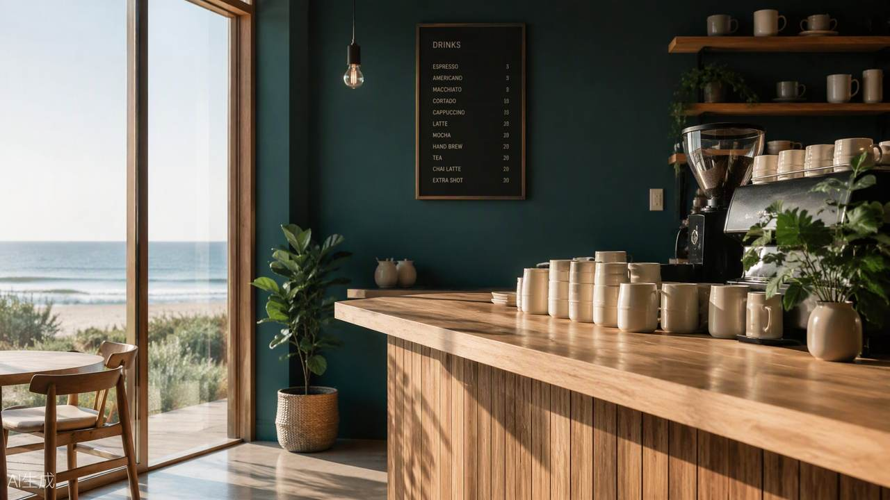

THE STORY
把海的瞬间
装进杯子
SEABEAN 海豆咖啡，诞生于深圳湾畔的一个念头：如果一家咖啡馆能像海一样，让人一推门就慢下来，那会是怎样的体验？
「海豆」取海与豆的双重意象——海的辽阔与包容，遇上咖啡豆的专注与匠心。我们相信，海岸的每一个瞬间都有对应的咖啡表达：破晓的清澈、正午的明亮、向晚的温柔、夜潮的深邃。
空间上以深海蓝与浪花白为主调，微水泥墙面如被海浪打磨的礁石，白蜡木家具与亚麻软装带来温度。在这里，咖啡不是快取即走的燃料，而是一段值得停留的海岸时光。